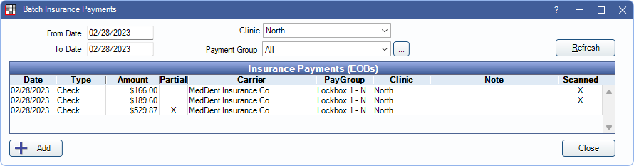
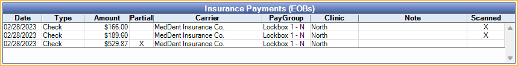

Batch Insurance Payment
In the Manage Module, click Batch Ins.
This window is for entering a large batch of claims on a single EOB. For a smaller batch or single claim, see Finalize Insurance Payment
Large batch insurance payment entry is useful when there are many claims on a single EOB or when multiple users enter payments at the same time. There are two different ways to enter large batch payments.
- In the Manage Module, Batch Ins, create the payment, then receive and attach claims.
- In the Account Module, receive the claims (see Receive Claim). Then in the Manage Module click Batch Ins to create the payment and attach the claims.
Supplemental payment amounts can only be received in the Account Module. See Supplemental Insurance Payments. Once received, it can be attached to a batch payment.
Batch Insurance Payments
Filters: Click Refresh to update the Insurance Payments (EOBs) grid after setting filter criteria
- From/To Date: Filters by Payment Date.
- Clinic: Filters by Clinic assigned to payment. If a user is restricted to specific clinics, only accessible clinics are listed.
- Payment Group: Filters by Claim Payment Group. This option is only visibile when Definitions: Claim Payment Groups are in use.
Insurance Payments (EOBs) Grid: Insurance payments that match the filter criteria are listed here.
- Date: Payment Date.
- Type: Payment Type. (Definitions: Insurance Payment Types)
- Amount: Payment Amount.
- Partial: X indicates Total Payments of attached claims do not match the payment Amount
- Carrier: Insurance Carrier Name.
- PayGroup: Claim Payment Group. Column is hidden if Definitions: Claim Payment Groups are not in use.
- Clinic: Clinic assigned to the payment.
- Note: Payment note.
- Scanned: X indicates an EOB has been scanned or attached. See Scan EOB.
Add: Click to open Edit Insurance Payment and enter payment details for a new Batch Insurance Payment. See Creating a Payment and Attaching Claims below.
Creating a Payment and Attaching Claims
To create a new Batch Insurance Payment and attach claims, follow the steps below:
- In the Batch Insurance Payments window, click Add.
- Enter payment details into Edit Insurance Payment.
- If processing a virutal credit card payment, click the button for the credit card processor and follow the prompts to process payment.
- Click OK.
- From the Insurance Payment (EOB) window, search for and select a claim to attach to the payment.
- If the claim is already received (e.g., supplemental payment), click Attach and proceed to the Step 6.
- If the claim is not yet received:
- Double-click the Claim to open.
- Receive Claim By Procedure or As Total.
- Enter payment amounts
- Click OK.
- Click OK on the Edit Claim window. The claim is automatically attached to the batch insurance payment.
- Repeat steps as needed to attach additional claims to payment.
- Click Scan EOB to upload or Scan an EOB.
- Click Close to exit the Insurance Payment EOB window.
If Amount and Total Payments don't match, then clicking Close marks the batch payment as Partial. Double-click a partial batch payment from the Batch Insurance Payments window to continue. When payment amounts match, clicking Close locks the payment. To make changes, users must delete the batch payment and re-enter.

Batch insurance payments can be accessed from the Batch Insurance Payments window or viewed by claim via the Account Module (Edit Claim window).
Correct a Batch Payment
- In the Manage Module, click Batch Ins.
- Find the check to edit, and double-click to open it.
- Click Edit in the Payment Details area.
- Change the amount of the check by a penny and click OK. This will cause a mismatch between the paid amounts and check amount. When prompted, click OK to continue.
- Re-open the payment. Detach claims as needed.
- Double-click claims to open Edit Claim and edit payment information as needed.
- Once claims have been edited, reattach them to the payment.
- Edit the payment amount so the check total matches the paid amounts.
- Close the check to finalize again.
Questions & Answers
What if I cannot enter (receive) all of the claims that make up my bulk check/payments and I need to leave for the day?
Do not finalize the payment until you finish receiving all the claims. This way all claim payments will have the same payment date.
We have multiple people entering payments. How can we make sure the payments balance?
Assign payment groups to each payment. This will group payments together. Then run the Daily Payments Report by payment group.